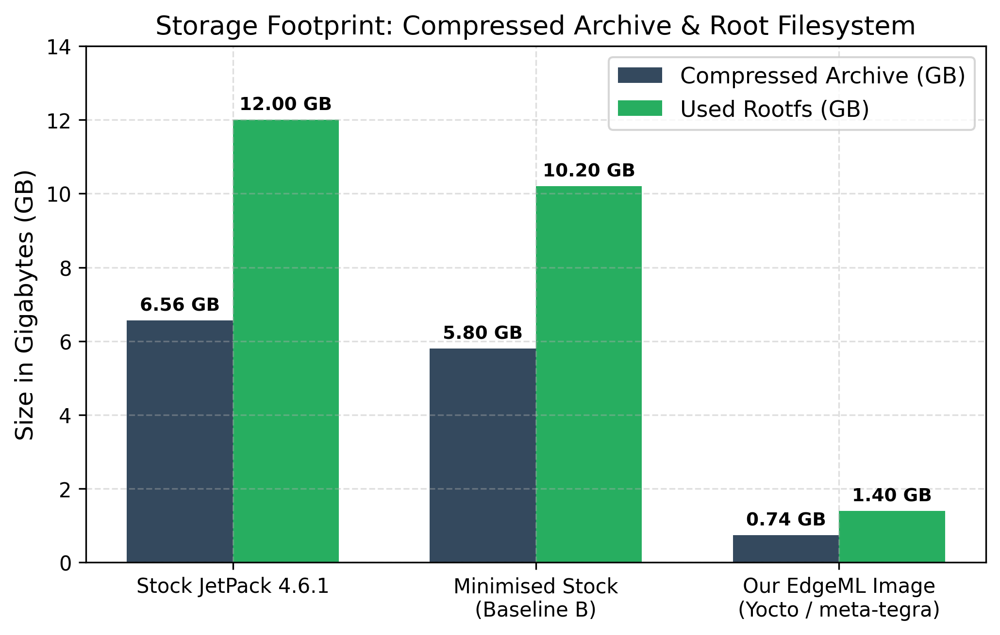
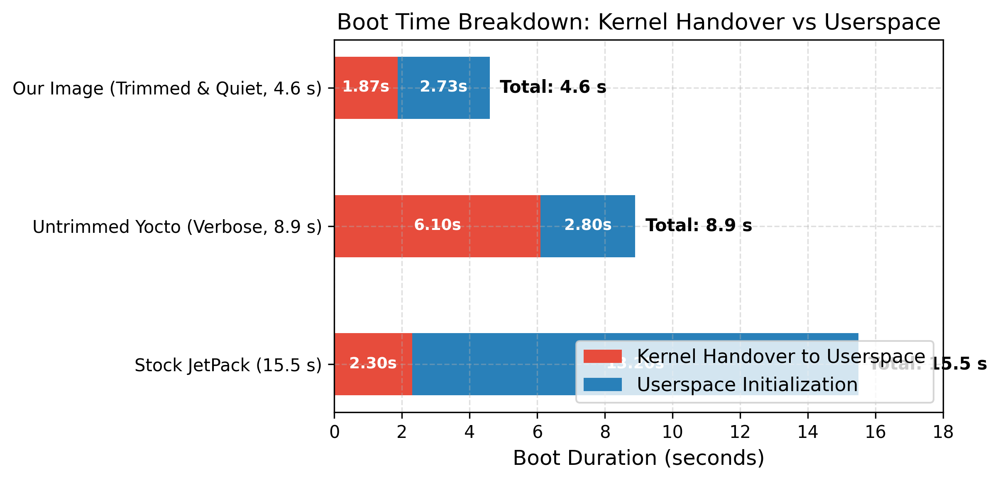
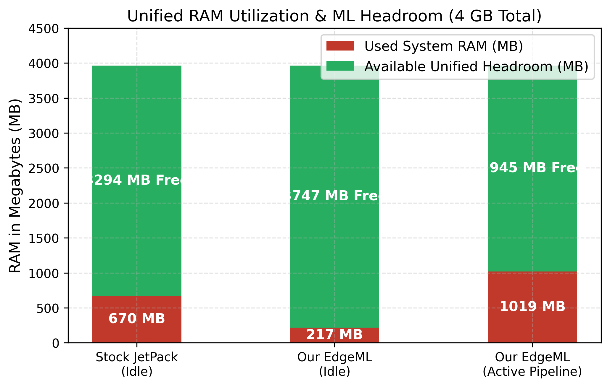
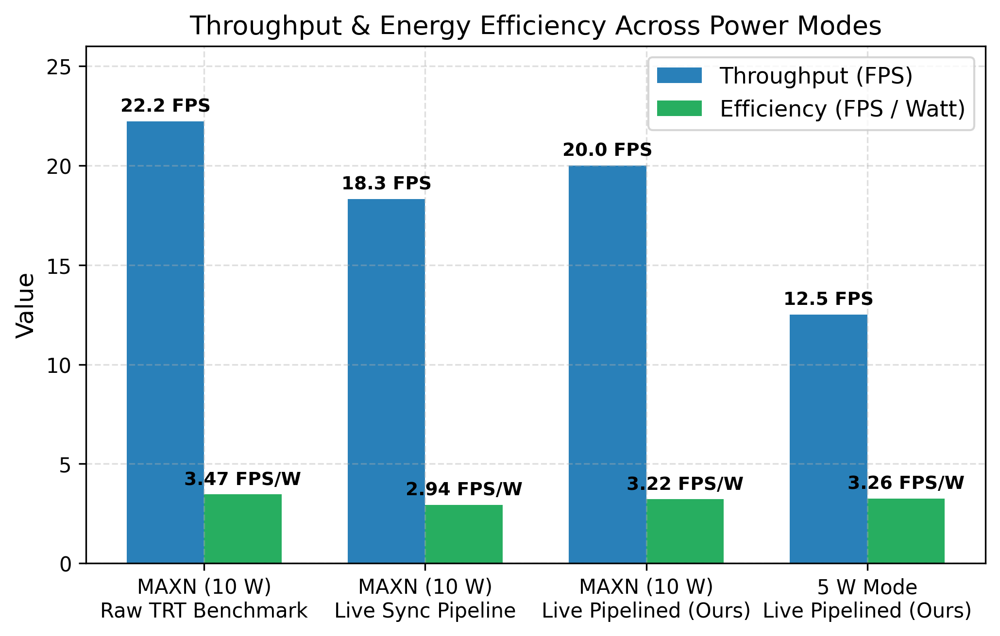
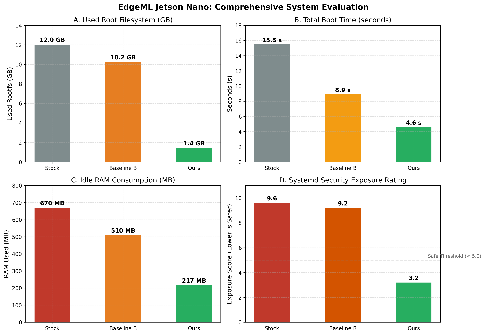

Presenter: Piyush | Course: CS3000 Operating Systems | Target Demo: 10 Minutes

DEBUG_KMEMLEAK, FTRACE).host1x/nvgpu (Maxwell GPU), overlayfs, USB network gadget, and INA3221 power monitor.quiet loglevel=3): 65 KB boot log over 115200 baud delayed userspace handover by 4 seconds. Handover dropped from 6.1 s to 1.87 s; total boot reduced from 15.5 s to 4.6 s (70% faster)!
Naive Sequential: Frame Time = Tpre (11.0 ms) + Tinfer (48.2 ms) + Tpost (1.8 ms) = 61.0 ms &implies; 18.3 FPS (GPU sits idle during letterboxing).
Overlapped Pipelining: max(Tpre, Tinfer) = max(11.0 ms, 48.2 ms) = 48.2 ms &implies; 20.0 FPS Live Cap (+9.3% throughput boost; 100% of CPU letterbox overhead hidden!).
cudaMallocHost).cudaMemcpyAsync transfers input tensor concurrently over internal bus.std::condition_variable with 3 slots for non-blocking handover.

edgeml-detector.service executes under dedicated unprivileged user edgeml:video (UID 1200).NoNewPrivileges=true, ProtectSystem=strict, ProtectHome=true, PrivateTmp=true, ProtectKernelTunables=true.char-nvhost only covers Major 242. Jetson Nano's Maxwell GPU is Major 506 (char-57000000.gpu). Allowed via DeviceAllow and udev rule 99-tegra-devices.rules (mode 0660).systemd-analyze security dropped from 9.6 UNSAFE to 3.2 OK (-67% attack exposure)!rp_filter=1), hidden kernel pointers (kptr_restrict=2), and root-only dmesg (dmesg_restrict=1).ro) blocks malware persistence./): Mounted strictly Read-Only (ro). Binaries and system configs can never be altered./run, /tmp, and /var/volatile live purely in RAM./var/lib/edgeml./usr or /etc fail immediately with Read-only file system.Cycle 1: Recovery in ~4s | Mount: ro | EXT4 errors: 0 | Auto-start: OK Cycle 2: Recovery in ~4s | Mount: ro | EXT4 errors: 0 | Auto-start: OK Cycle 3: Recovery in ~3s | Mount: ro | EXT4 errors: 0 | Auto-start: OK Cycle 4: Recovery in ~3s | Mount: ro | EXT4 errors: 0 | Auto-start: OK Cycle 5: Recovery in ~3s | Mount: ro | EXT4 errors: 0 | Auto-start: OK RESULT: 5 / 5 cycles passed cleanly with ZERO corruption!
SysRq 'b') during active 20 FPS GPU inference.

"Couldn't you just disable GNOME via systemctl set-default multi-user.target on stock Ubuntu?"
Run automated 7-point health check:
./scripts/smoke-test.sh nano-usb
ro).Launch live telemetry visualizer:
python3 scripts/web-dashboard.py 8080
http://localhost:8080.Trigger abrupt kernel reset:
ssh nano-usb "echo 1 > /proc/sys/kernel/sysrq; echo b > /proc/sysrq-trigger"